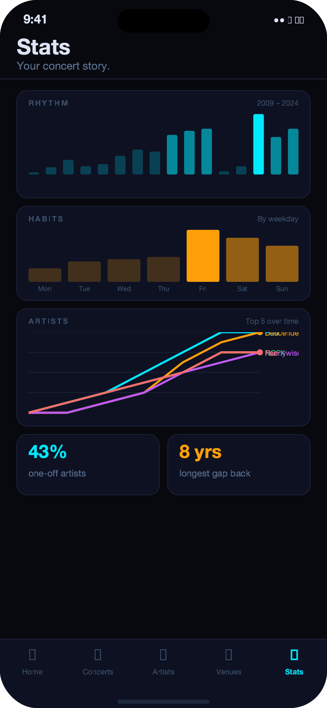
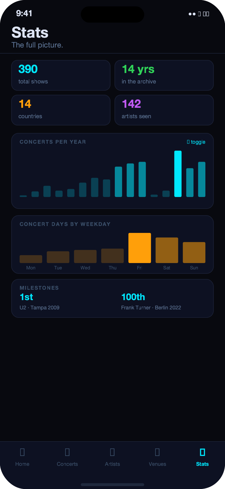
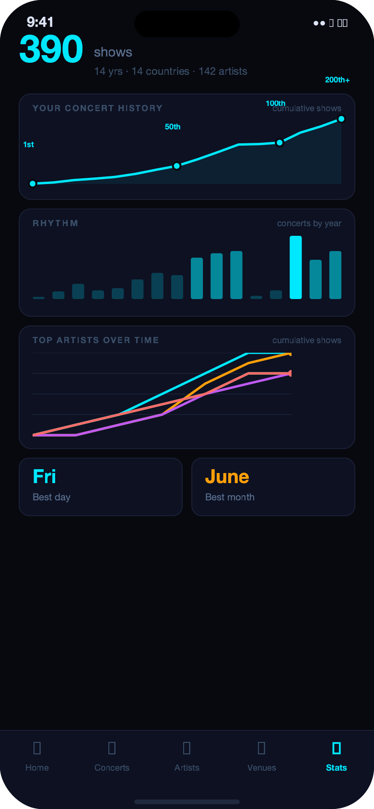

Concept 01

Sections
Vertical scroll with three labeled sections — Rhythm, Habits, Artists. Familiar card-grid feel, easy to scan. Closest to what the rest of the app already speaks.
Top 5 artists
What we'd build
- Rhythm — concerts-per-year bar chart (full width), toggle for concert days
- Habits — weekday bar chart + dominant-day-by-era text grid (4 time periods)
- Artists — top-5 cumulative line chart + repeat-depth breakdown cards
- Places — country scorecards, longest venue relationship, best city-month
Effort
- Lowest build effort — existing stat cards just move to this tab
- 3 new chart components + 2 new DB queries (weekdays, per-artist-per-year)
- Section headers can be made sticky for a long-scroll feel
Concept 02

Big Picture
Everything above the fold. 2×2 hero numbers, then the concerts-per-year chart as the centrepiece, then a compact weekday chart. The whole story in one viewport.
Milestone growth
What we'd build
- Hero grid — 2×2 chips: total shows, years active, countries, artists (coloured numbers)
- Dominant chart — full-width concerts-per-year bar, with toggle for concert days
- Weekday chart — secondary compact bar, Fri/Sat/Sun cluster immediately visible
- Milestone strip — 1st, 50th, 100th, 200th concert callouts beneath the charts
- Scroll reveals deeper: artist cards, places, streaks, reunion gaps
Effort
- Low–Medium — first viewport requires only 2 charts
- Highest impact-per-line-of-code of the three; no scrolling needed for the core story
- Toggle on the bar chart adds a small state management layer
Concept 03

Chronicle
Story-first. Opens with the headline count, then an annotated cumulative growth arc — your whole concert life as a single line. Charts and stat lanes below. Feels like a documentary.
Milestone growth
Top 5 artists
What we'd build
- Headline — "390 shows" in display type, years · countries · artists subtitle
- Milestone arc — cumulative area chart with annotated dots at 1st/50th/100th/200th
- Rhythm bar — concerts per year below the arc, adds context to the growth shape
- Artist lines — top-5 cumulative line chart showing loyalty vs. phases over time
- Stat lanes — compact horizontal rows: Artist insights, On the road, Places
Effort
- Medium–High — annotated milestone chart is the most custom piece
- Artists line chart needs a new per-artist-per-year count query
- Highest visual payoff; most distinctive — closest to Spotify Wrapped in feel